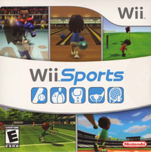

The Wii is a Nintendo home gaming console that was made to compete with Microsoft's Xbox as well as Sony's PlayStaion 3. The Wii is fully backward compatable with Gamecube games, and also has the ability to download emulations of older games off the internet. The Wii Remote is wireless, but has an attachable nunchuck with a joystick. The Wii has a sensor bar which you can point your Wii Remote towards and it will act like a pointer.

Here are some games for the Wii: